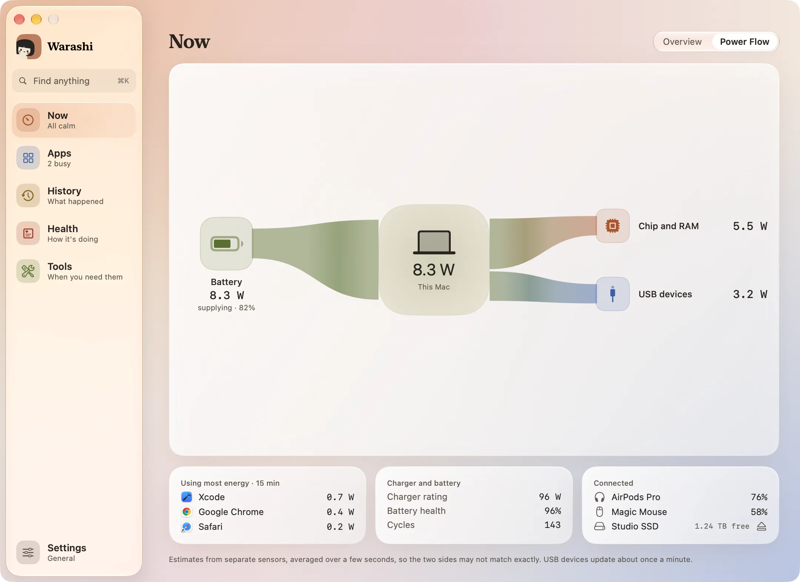

The spirit that looks after your Mac.
Warashi watches your Mac, keeps its battery young and its disk clear, tells you the moment something's wrong, and reminds you to rest. One quiet menu bar app instead of eleven.
Apple silicon · macOS 26 or later · Free beta · No account


Care · Battery
Held at 80%.
Ages years slower than a battery that sits at 100%.
Clean · Clean Up
7.2 GB safe to clean
App cachesBrowsersLogsDeveloper
Rest · Breaks
0:15
Look away from the screen.
Checkup
All good.
Know · Alerts
 Google Chrome9.8 GB
Google Chrome9.8 GB
Memory is running short. Quit it, or let it be.
Know · History
Why was it slow at 14:02?
Xcode was using most of the processor.
For developers
$ warashi agents Claude Code working · 62% left Codex done · my-app
Know
It knows your Mac by heart.
One spirit and one number in the menu bar, two beside the notch, and a reading every five seconds, kept for a year. When something happens, Warashi already knows why.


Told once
A runaway app, memory running short, heat, a disk filling up.
Once per problem, with the evidence and one thing to do.
Flight Log · yesterday
- Music kept your Mac awake for 55 min
- Your Mac was slow for 6 min Xcode was using most of the processor.
- Google Chrome's memory is growing fast Grew by 1.35 GB in the last hour.
- Charged to 100%, past your 80% limit


Care
It keeps your Mac young.
A battery held at 80% lasts years longer. A weekly Checkup catches trouble before it costs you. And when it's time for a new Mac, Warashi knows exactly what you need.


$249
what a worn MacBook Pro battery costs at Apple, out of warranty. A battery that sits at 100% and warm wears fastest.




Upgrade Advisor
Does my next Mac need 32 GB?
After 30 days of your real use, Warashi says how much memory and storage your next Mac needs, and whether a faster chip would help. With the evidence, not a guess at checkout.
Clean
It keeps your disk clear.
See what's filling the disk, clear what comes back by itself in one go, and remove apps with everything they left behind. All of it goes to the Trash, so nothing is ever lost by mistake.
Clean Up
Everything that could go, by how careful to be.
- Safe to cleanApp and browser caches, logs, Xcode's build data. They come back by themselves.7.2 GB
- Look firstOld installers, second copies of downloads, Mail's attachment copies.1.4 GB
- Handle with careiPhone and iPad backups, which may be the only copy.38 GB


Uninstaller
Remove apps properly.
Every app with what it left in your Library, the ones you haven't opened in months first. Plus leftovers of apps you removed years ago.
Never your files
Names, sizes and dates only.
Warashi never opens a document. Full Disk Access is optional.
Trash
Emptied. 4.8 GB freed.
A nudge when the Trash grows large, and the real number when you empty it.
Rest
And it looks after you.
Gentle breaks for your eyes and your back, a calmer screen when you need to focus, and a Mac that stays awake exactly as long as the work needs.


Keep Awake
For an hour, until the work is done, or with the lid closed.
For a download, a build or a presentation.
The little things
- Internet and disk speed
- Wi‑Fi quality
- A black screen for cleaning
- Hide desktop icons
- Mute the microphone
- Eject All


For developers
What's on that port? What's that agent costing?
Claude Code, Codex and Cursor: what each is doing, how much of your limit is left, and a nudge in the notch when one needs you. Dev servers by project, Docker, local AI models in memory, and the gigabytes your tools leave behind.


The warashi command
$ warashi explain 14:30 Memory ran short Swap rose from 1.2 GB to 8.6 GB. $ warashi apps --hours 3 Xcode CPU 37m 35s 9.4 GB Safari CPU 26m 22s 6.1 GB
And an optional, read-only MCP connection, so Claude, Cursor and other AI apps can answer from your Mac's history. Nothing is shared unless you add it.
One quiet app, where there used to be a drawer of them.
To get everything Warashi does, you'd install eleven apps. Here is that drawer, priced at each maker's own site. Nothing against them: they're good at their one thing.
- Live readings in the menu bar, with historyiStat Menus 7$11.99once
- Clean-up, uninstaller, leftovers, malware scanCleanMyMac$39.95a year
- A map of what fills your diskDaisyDisk$9.99once
- Duplicate filesGemini 2$19.99a year
- Charge limit, charge to full, a scheduleAlDente Pro€11.49a year
- Battery health over the monthscoconutBattery Plus€9.95once
- Breaks and posture nudgesLookAway$19once
- Soft Focus: everything but your window, dimmedHazeOver$4.99once
- Keep awake, even with the lid closedAmphetamineFree
- Claude Code, Codex and Cursor limitsCodexBarFree
- Xcode and simulator clean-upDevCleaner for XcodeFree
- Any moment of the past year explained, and what each app costs in powerNo app sells this–
≈ $130the first year, then ≈ $73 every year after
What the eleven together cost, for one Mac. Three of them are subscriptions, and each one has its own settings, updates and menu bar item.
$0while Warashi is in beta
Everything above, in one app. Warashi 1.0 will be a one-time purchase. No subscription, ever. Your history and settings carry over.
Prices from each maker's own site or the Mac App Store in November 2026, for one Mac; euro prices converted at about $1.15. They vary by region and promotion. Each app is the one we'd pick for that part: some do more than Warashi there, and Warashi doesn't do everything they do.
0.2%
of one core in the background. Nothing at all while your screens sleep.
60MB
of memory, typically, with the window closed. Native Swift, built for Apple silicon.
0 accounts
Download, open, done. Your history never leaves your Mac.
Private by design
- No account, no cloud, no telemetry about your apps or files.
- No screen recording, no keystrokes, no file contents, ever.
- Anonymous usage statistics only, disclosed in the welcome tour. Exactly what's sent
See it in two minutes.
Good questions.
What is a warashi?
In Japanese folklore, a zashiki-warashi is a small house spirit. A home it lives in is said to thrive. Ours lives in your menu bar and looks after your Mac.
Which Macs does it run on?
Macs with Apple silicon (M1 and later) running macOS 26 or newer.
Is it free?
Free during the beta. Warashi 1.0 will be a one-time purchase, with no subscription. Your history and settings carry over.
Can I keep AlDente or CleanMyMac?
You can, though two charge managers will fight over the limit, so keep one. Warashi tells you when it sees another one running.
Does it slow my Mac down?
No. About 0.2% of one core in the background and 60 MB of memory, measured and shown in Settings.
How is it different from Activity Monitor?
Activity Monitor shows this second. Warashi remembers what happened while you weren't looking, tells you when it matters, and looks after the battery, the disk and you.

Made by one person, with care.
Hi, I'm Adam, an indie developer. Warashi is my own project: the app, its design and this website. I want it to be the kind of Mac app I'd love to use myself: calm, honest about its numbers, and light on your Mac. If you have an idea, or something isn't right, write to me.
Adam
Let a quiet spirit
look after your Mac.
Free while Warashi is in beta. One small download, no account, and from tonight your Mac has someone looking after it.